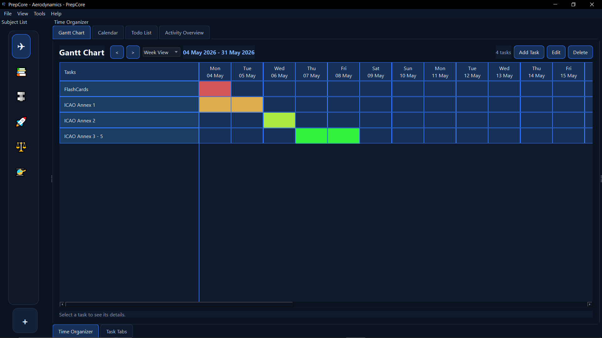
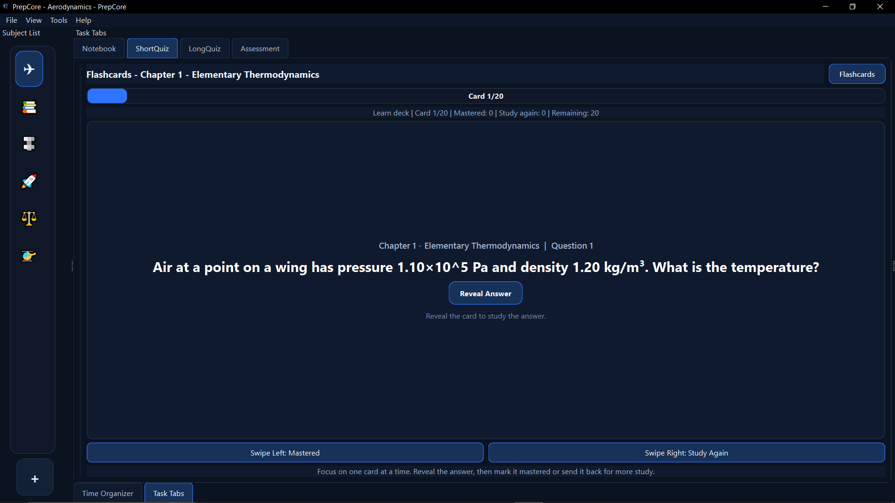

Plan long study arcs
Turn review sessions, deadlines, and exam prep into a visual timeline.
PrepCore Desktop
This page is a lightweight launcher for the packaged app. It points directly
to the current build output in dist/PrepCore.exe.
Ready to download the current build.
dist outputFeature Tour
A quick visual pass through the study tools, quiz builders, flashcards, schedules, and workspace customization inside the app.

Turn review sessions, deadlines, and exam prep into a visual timeline.

Use the calendar layout to map study blocks and keep momentum visible.

Create targeted practice sets around the exact topics you need to drill.

Review weak spots fast and keep your practice grounded in real feedback.

Convert notes into bite-sized recall prompts without leaving the workspace.

Switch from building material to memorizing it with a cleaner focused view.

Arrange windows and panels into a setup that matches how you actually study.